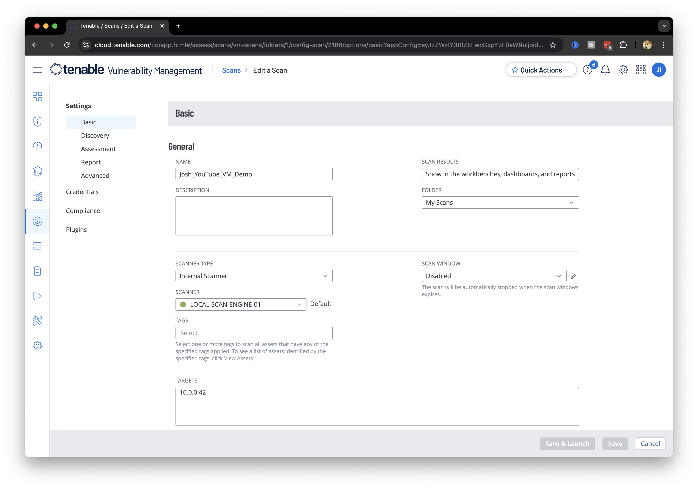
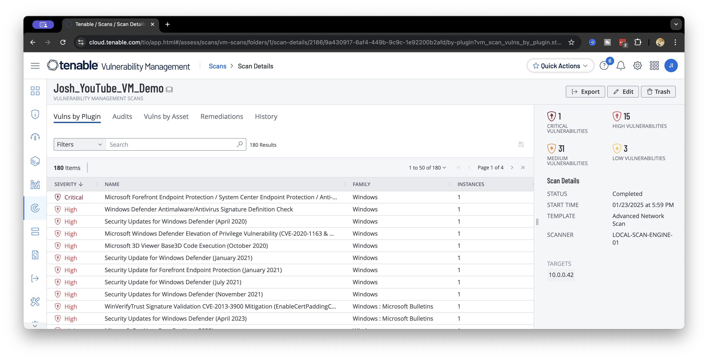
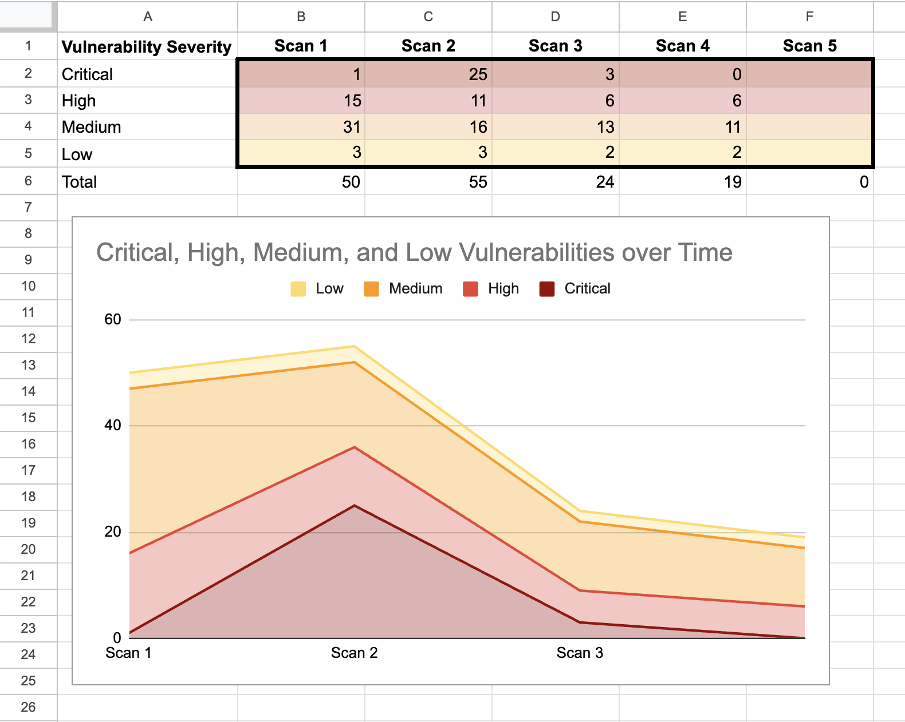
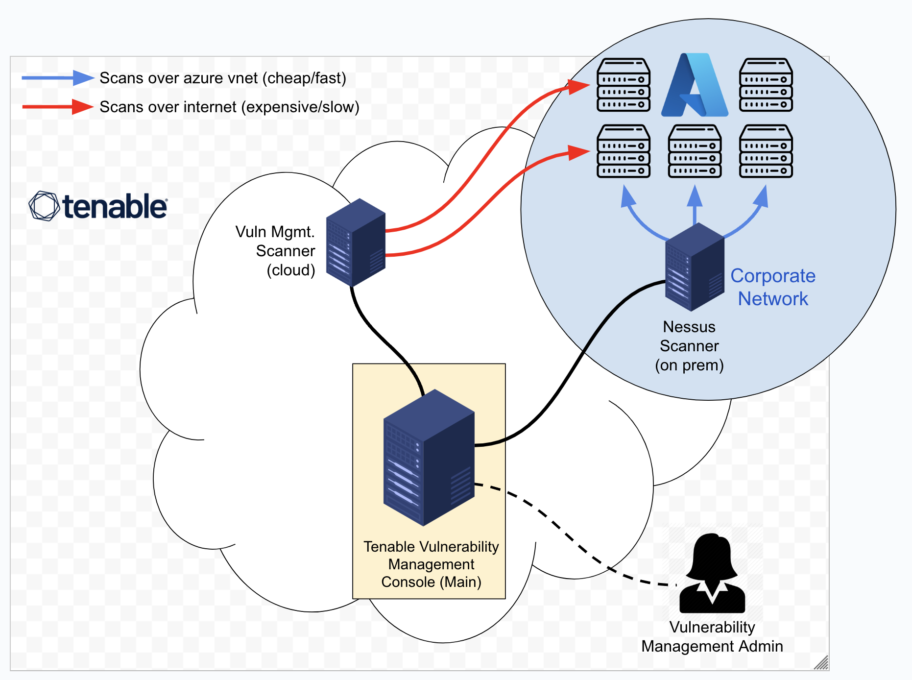

A full vulnerability-management cycle on an Azure-hosted Windows VM using Tenable: baseline scan, DISA/STIG compliance validation, an intentionally introduced regression, remediation, and a final scan confirming the fix.
A Windows VM in Azure, scanned with a credentialed Tenable scan targeting general vulnerabilities plus the DISA Windows 10 STIG v3r2 benchmark.

Three specific controls were tracked through the whole cycle:

An outdated Firefox v110 was installed and the Guest account re-enabled to intentionally regress WN10-SO-000010, then the VM was re-scanned to confirm the tool actually caught it. Remediation followed: Firefox removed, the event log size increased, Guest renamed and disabled again, and Windows fully patched — then re-scanned to confirm.
| Severity | Scan 1 | Scan 2 | Scan 3 | Scan 4 |
|---|---|---|---|---|
| Critical | 1 | 25 | 3 | 0 |
| High | 15 | 11 | 6 | 6 |
| Medium | 31 | 16 | 13 | 11 |
| Low | 3 | 3 | 2 | 2 |
| Total | 50 | 55 | 24 | 19 |
Scan 2's spike is the deprecated Firefox install; scan 3's drop follows removing it; scan 4's critical count hits zero after fully patching Windows.

